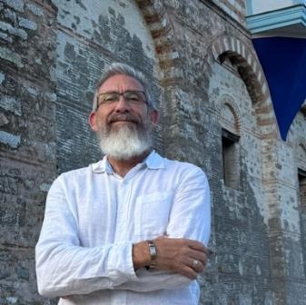
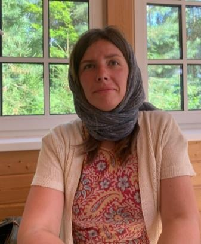

Healing hearts. Building character. Restoring purpose.
A community-based therapy program, rooted in the Orthodox Christian understanding of the person, that helps teens build resilience, emotional strength, and meaningful lives through real-life experience.
Experience. Growth. Transformation.
A community-based approach to personhood, rooted in the Orthodox Christian understanding that every person is created in the image of God and made for communion with God, family, and community.
Through this perspective we orchestrate experience for the individual to overcome the obstacles of modern life. The goal is not simply to reduce symptoms of psychological illnesses or stop bad behavior. The goal is to help people become grounded and secure within their personhood, to “maximize” the grace that God gives within their sacramental experiences — to connect the Church’s sacraments to the sacramental experience of the abundant life that God gives.
We focus on teens primarily because they are at risk in our society at a higher level than most other age groups. The program works for most any age group, including adults. Pre-teens are not “at risk” like teens are these days, but they do respond very well to the program, and we encourage families to enroll them. Adults can also participate, and in fact, we aim at involving adults in the activities when scheduling permits.
The approach does not view a struggling teen as merely a diagnosis, a behavior problem, or a collection of symptoms. It sees the teen as a wounded but valuable person who may be disconnected from identity, responsibility, family, community, purpose, and spiritual orientation. Many times, these wounds are interconnected in a physiological manner, so we approach them carefully and within a holistic framework — discovering the most efficient way to heal for each unique client. The problems of today are complex, from basic dietary habits to trauma-based experiences, and may or may not include drug rehabilitation. These are case by case, since some younger people may require full-time, residential treatment, which we do not offer at this time.
What Makes Our Approach Different?
This is a proven model within the mental health field, certified as an “Evidence-Based Practice” (EBP). It works well within a secular context, but it works much better in an Orthodox context. This type of EBP “psychosocial therapy” is Orthodox at its core since it involves experience and change — something the mental health field has borrowed from the Christian healing process over the years, modifying it by removing theological terminology along with key spiritual practices and concepts.
In short, it can be exceptionally good to take most any person through this process as a part of their catechism. This would stabilize them from past trauma or current chaos that is out of the immediate reach of the clergy. The same modality can also be used for people who have fallen away from the faith and experienced traumatic situations. Many teens — or any person, for that matter — can talk well in an office but still struggle in real life; many will take medication with no actual rebuilding of spirit and mind in an experiential manner. Orthodox Experiential Therapy uses real-life activities to reveal and rebuild character and experience, giving the individual a chance to embrace spiritual concepts such as humility and boldness as they receive the sacraments and teachings of the Church. We believe the experience we give them begins working in tandem with sacramental grace.
Example Session
- Goal
- Introduce stillness as the opposite of inner chaos.
- Activity
- Nature hike, silent reflection, ceaseless prayer.
- Discussion
- Examine and discuss what happens to us when everything gets quiet.
- Skill
- Watchfulness, calmness, guarding thoughts, prayerful posture.
The Role of the Therapist
“A guide, mentor, coach, and observer.”
The therapist participates in real-life activities with the youth, watches patterns emerge, coaches in the moment, and helps rebuild trauma — however large or small — in an Orthodox manner, working alongside the priest whenever possible.
Therapist Posture
- Firm but not harsh
- Warm but not indulgent
- Truthful but not humiliating
- Patient but not passive
- Spiritually grounded but not forceful
- Consistent, practical, observant
Growth happens through lived experience, not information alone.
Contemporary life has significantly reduced opportunities for stable communal life and embodied participation. Digital technology, screen-based entertainment, fragmented family routines, and the isolating structure of modern living have contributed to a decline in face-to-face community, shared responsibility, and meaningful interpersonal engagement. While access to information has expanded, many adolescents now experience less direct participation in healthy family systems, neighborhood life, practical work, and real-world social development. We also face a substantial amount of toxins flooding the food and medical industries with no end in sight — there is awareness, no doubt, but few healing modalities.
Orthodox Experiential Therapy is designed in response to these problems. It is based on the conviction that human growth and healing occur not through information alone, but through lived experience, relationship, responsibility, and repeated participation in meaningful activity. From an Orthodox perspective, truth is not merely intellectual content; it is embodied, practiced, and deepened through real life.
The program is built around community-based, real-life therapeutic engagement: structured activities, relational coaching, reflective processing, and practical skill-building that help youth develop emotional regulation, self-awareness, social competence, resilience, work ethic, and purpose — through outdoor experiences, games, household tasks, service projects, shared meals, creative activities, and guided family or community interaction.
We do not diagnose medical conditions, but we do encourage informed awareness around nutrition, gut health, inflammation, detoxification, sleep, and lifestyle factors that influence emotional regulation, attention, energy, and overall wellbeing. The model is intentionally holistic. It does not position itself as an alternative to medical care, nor claim to replace psychiatric treatment where absolutely needed; instead it complements appropriate medical and psychological care by addressing domains often left underdeveloped in standard treatment: community participation, practical responsibility, embodied skill-building, family reintegration, moral formation, lifestyle awareness, and spiritual grounding.
A Note on Psychiatric Medications
We walk very carefully with situations where medication is involved. We cannot prescribe medications, but we can share data about certain medications. The term “side effect” is often marginalized within our society. Within the field of psychiatry, side effects can be very long-term and even dangerous. There is much experimentation within corporate entities these days, which means careful consideration must be taken when choosing to begin or continue psychiatric medication.
Seven foundations for a grounded life.
Emotional Regulation
Manage big emotions, reduce anxiety, and increase resilience.
Self-Awareness & Identity
Understand who you are and build confidence in your true self.
Healthy Relationships
Build communication, trust, respect, and positive connections with others.
Responsibility & Discipline
Develop strong habits, follow-through, and take ownership of your choices.
Purpose & Motivation
Discover goals, meaning, and direction for a fulfilling life.
Body & Brain Wellness
Support physical health, movement, nutrition, and brain function.
Spiritual Growth
Strengthen inner peace, values, gratitude, and faith.
Real-life experiences build skills that last.
“We build upon their good experiences and rebuild traumatic experiences.”
Outdoor Adventures
Build endurance, confidence, and connection to nature.
Cooking & Nutrition
Learn healthy habits, teamwork, and practical life skills.
Sports & Games
Improve teamwork, self-control, and handling wins or losses.
Work & Chores
Develop responsibility, work ethic, and pride.
Social Connection
Practice communication, problem solving, and building friendships.
Service & Volunteering
Build empathy, purpose, and a heart for helping others.
Challenges & Play
Build patience, strategy, flexibility, and healthy decision-making.
Reflection & Growth
Develop self-awareness, gratitude, and inner stillness.
Who We Serve
Therapy for all teens, including those with:
- Anxiety, depression, and mood challenges
- ADHD and attention difficulties
- Autism spectrum and social challenges
- Learning differences and processing issues
- Trauma and emotional dysregulation
- Behavioral and impulse-control challenges
- Identity, purpose, and motivation struggles
Why Families Choose Us
- Faith-aligned approach grounded in timeless values
- Real-world experiences for real-life change
- Individualized plans for each teen
- Compassionate, experienced therapists and mentors
- Safe, supportive, judgment-free environment
- Family involvement for stronger outcomes
Lasting Transformation
- Stronger emotional and mental health
- Improved relationships and communication
- Better focus, habits, and school or work performance
- Healthier body and more energy
- Greater confidence and self-respect
- A meaningful life with purpose and direction
What to expect, session to session.
Sessions
Children or adults need at least one visit per week for 2 hours each visit. This is a bare minimum, usually for “lower needs” such as mild stress factors. Many will need 2 to 3 visits of 3 hours per week for at least three months.
Cost
- The cost is relative to the number of clients in the parish or community of parishes. Right now, this is a husband-and-wife team that requires what your average, modest household in America requires.
- Depending on the case load per parish, and the distance between parishes, there could be a minimum number of commitments per parish.
- If a family or person wants to donate hours to another person, this is acceptable in certain cases.
- Everything is tax deductible.
Growth
- This organization can grow, depending on how many people would like to volunteer and learn. Both Michael and Katya are personable teachers and able to train.
- Orthodox Experiential Therapy is not only for Orthodox people. It can easily be outfitted for evangelism and public help.
- Because it is explicitly Orthodox, it cannot be covered by insurance of any sort.
- There is no magic involved. Most healing is either immediately miraculous, or slow and steady. It requires dedication, but very few people get discouraged by it.
Michael & Katya Spreng

Michael Spreng
Tonsured Reader, Orthodox ChurchMichael Spreng is a tonsured Reader in the Orthodox Church with both formal and informal Orthodox education, extensive formation under monastics, and substantial pilgrimage experience. His work is shaped not only by study, but by years of lived immersion in Orthodox spiritual life, pastoral culture, and practical work with youth and families.
Michael and his wife, Katya, have served youth for many years in a variety of settings and roles, including the kind of experiential, community-based therapeutic work described in this program. Their work has involved not only mentoring and teaching but walking closely with young people and families through emotional, behavioral, relational, and spiritual struggles in real-life settings.
Michael is especially gifted in outdoor and experiential settings. He has the skill and confidence to lead children, teens, and adults into challenging activities that stretch them beyond what they have typically experienced, while using those moments as opportunities for growth, reflection, and therapeutic insight. He is also well suited for deep conversations on theology, culture, meaning, and the social forces shaping modern life. His approach is personal, direct, and unafraid of difficult subjects.

Katya Spreng
Child Therapist & High School TeacherKatya has worked as both a child therapist and a high school teacher. She brings a rare combination of strength, warmth, and practical skill to her work with youth and families. Michael has extensive experience working with children, adolescents, and adults in trauma-informed settings, including community-based therapy, behavioral health work, and work with youth and adults in detention. Together, Michael and Katya bring a broad range of experience shaped by both American and Eastern cultural life, giving them a perspective that is unusually rich, grounded, and adaptable.
Katya brings her own distinctive strengths to the work. She is highly skilled in ranch and animal care, cooking, homemaking, and other creative and practical activities that are increasingly rare in modern life, yet deeply valuable in experiential and restorative work. Having been raised in the East and lived in America for over half of her life, she brings both cultural depth and practical wisdom to the families and youth she serves. Her approach, like Michael’s, is deeply personal, sincere, and fearless.
Together, Michael and Katya offer a model of care that is relational, experiential, culturally informed, spiritually grounded, and committed to the restoration of the whole person.